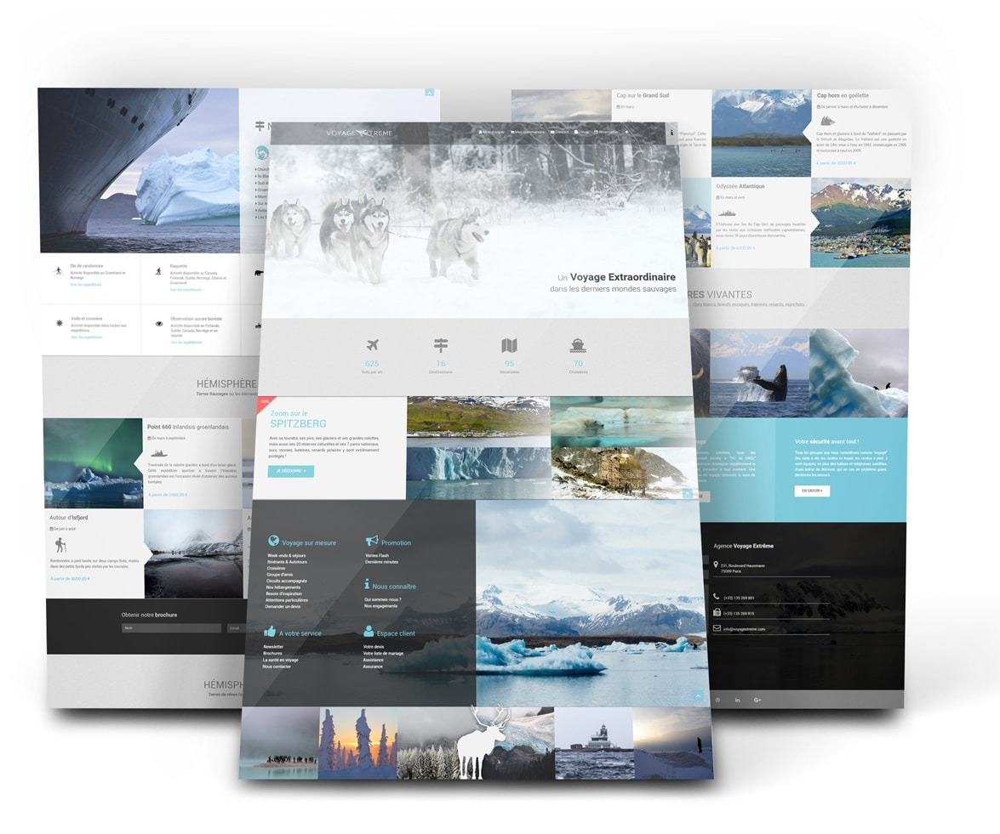

Ce projet s'inscrit dans le cadre de l'unité d'enseignement Web de la formation DUT Informatique dispensée par l'IUT LYON 1. Dans la continuité des cours théoriques que nous avons eu (notamment en HTML/CSS), ces travaux forment la partie pratique de cette discipline.
Le but de ce projet consiste à élaborer une maquette de site de vente en ligne, la marchandise à vendre étant au choix. Conformément à l'énoncé qui nous a été fourni, ce site est composé de :
En effet, en réponse aux contraintes qui nous ont été soumises, cette maquette est uniquement codée en HTML et en CSS sans framework, validée par le W3C validator.
Nous avons utilisé Sublim Text pour coder le site. Malgré une licence propriétaire, cet éditeur de texte minimaliste et disponible multiplate-forme, offre de nombreuses fonctionnalités. Ce sont toutes ces raisons qui nous ont poussés à employer Sublim Text, cependant nous devions également choisir une méthode afin de diffuser nos productions.
Dans un premier temps, nous avons choisis d'utiliser les services de Google (Google Drive) afin de partager nos documents. Néanmoins, comme tout nos autres projets nous nous sommes vite rendu compte des limites de cet outils. Raison pour laquelle nous nous sommes dirigés vers une solution plus professionelle : Git en tant que VCS et GitHub pour bénéficier de leurs serveurs distants.
En effet, dans un soucis pratique et en accord avec le sujet, nous avons utilisé GitHub pour partager nos travaux, et rendre notre site accessible.
Chacun de nous n'ayant jamais réalisé de site avant ce projet, nous ne savions pas vraiment comment l'aborder, notamment en termes de répartition des tâches. Nous avons par conséquent opté pour une division simple du travail :
Aymeric s'est chargé de :
Gérome s'est chargé de :
Nous avons dans un premier temps travaillé chacun de notre côté, tout en nous tenant au courant de nos avancés respectives ainsi que des problématiques que nous rencontrions au cours de nos travaux. Enfin, nous nous sommes réunis dans un espace de coworking afin de finaliser et intégrer nos parties.
Durant les premières séances dédiées à la confection du site web, nous avons fait quelques essaies (pour être franc : pas toujours très concluants...) afin de savoir vers quel type de design nous allions nous tourner. Après quelques recherches sur le net afin de connaître le courant actuel et "l'état de l'art" du design web, nous nous sommes accordés sur un style tendant vers du flat design (en nous basant notamment sur l'image ci-dessous) :
En effet, le flat design est très prisé sur le web. Bien que parfois critiqué pour son ergonomie, ce type d'interface minimaliste permet de bénéficier de rendu rapide et simple à réaliser. Par ailleurs, nous pensons que les aplats de couleur propre à ce style fonctionnent particulièrement bien avec des grandes images de paysage, mettant ainsi en valeur les produits proposés par une Agence de Voyage Galactique.
Tout au long du projet nous avons réalisé de petites maquettes sur papier afin de modéliser nos idées et exprimer nos intentions. Ces croquis nous ont également permis de mieux visualiser les "boxs" que nous devions créer afin de mettre en forme nos idées.
Comme énoncé en amont nous avons pu employer quelques techniques qui se sont avérées quelques peu difficiles à manipuler au début, mais qui se sont montrée en réalité très simple et utile par la suite, j'ai nommé les Flex-boxs. Nous avions déjà eu la chances de les voir en cours avec des exercices ludiques, or sans grenouilles pour nous représenter ces boxs il est légèrement plus compliqué de les gérer. Mais nous y sommes parvenues et cette techniques est incontestablement celle que nous avons le plus utilisée dans l'ensemble du projet.
Néanmoins, nous avons pu également utiliser la disposition en grille (display:grid;) qui est sensiblement identique aux flex-boxs. En effet cette structure, grâce à ses cases disposées de façon absolues, ont permis à Aymeric de placer ses planètes selon une forme elliptique, propre au système solaire. Au-delà de ces 2 méthodes nous avons pu tester au cours de ce projet, différentes façons de structurer les balises html (float, inline-block...), sans pour autant les voir implémenter dans ce projet.
Une fois de plus, ce projet nous a permis de nous entrainer à utiliser le HTML et le CSS et mettre en pratique les cours que nous avons pu voir en classe. Cela nous a également permis de nous renseigner sur les différentes pratiques propre à ces langages client, les différents styles du web (qui nous ont également inspirés).
De plus, cela nous a permis de nous faire une idée du quotidient des developers front end, même si nous nous doutons que dans un soucis de productivité, des frameworks tel que bootstrap sont utilisés par ces derniers. Il est cependant crucial de savoir comment gérer du code HTML/CSS lors de la création de site comme celui que vous êtes en train de consulter.
Plusieurs points se sont avérés compliqués. le premier étant que nous ne savons pas vraiment structurer le code CSS. En effet, nous pensons que malgré l'usage des sélecteurs, il peut rapidement être difficile de se repérer à partir du moment que la cinquantaine de lignes est passée. Raison pour laquelle nous avons décidé de commenter notre code.
Un second point bloquant a dû être géré tant bien que mal. En effet nous pensions que dans le délai impartit (et les divers projets dans les différentes matières), nous aurions largement le temps de générer davantage de pages que celles nécessaires. Or ce fut loin d'être le cas ! Etant des novices dans ce domaine, il nous est arrivé de passer plusieurs heures sur une règle CSS qui ne s'appliquait pas ! Et ce pour de multiples raisons, soit car une tierce règles avec une priorité supérieure affectée le bloc en question, soit car la règles en question ne concernait pas le bloc mais son ascendant... Seul la pratique aurait pu corriger ce type de maladresse.